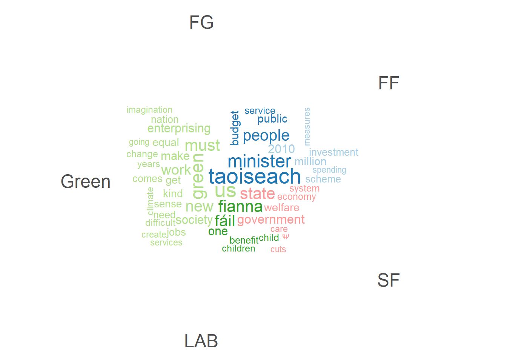
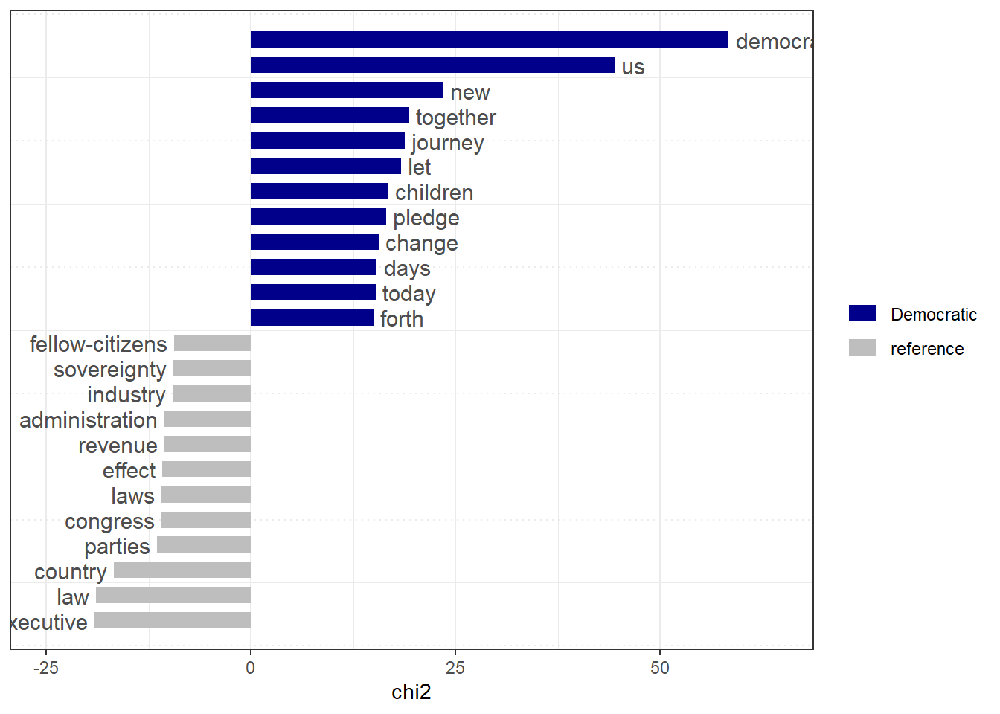
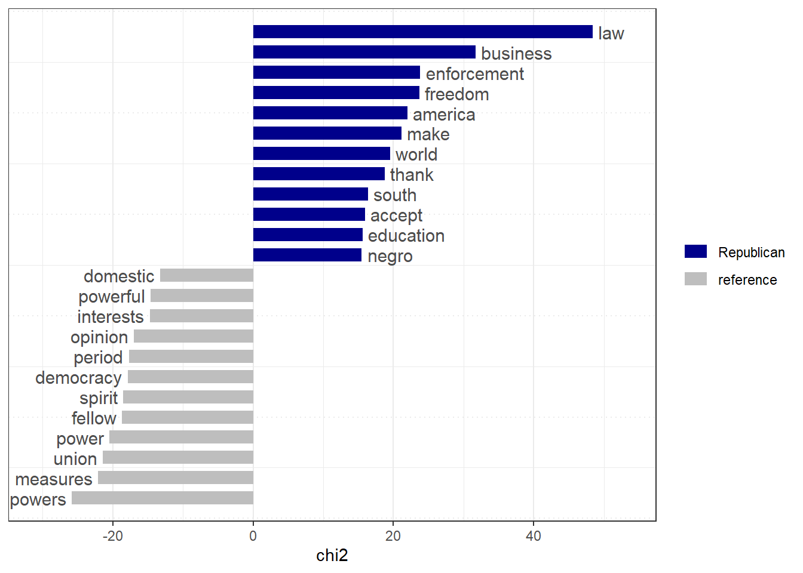
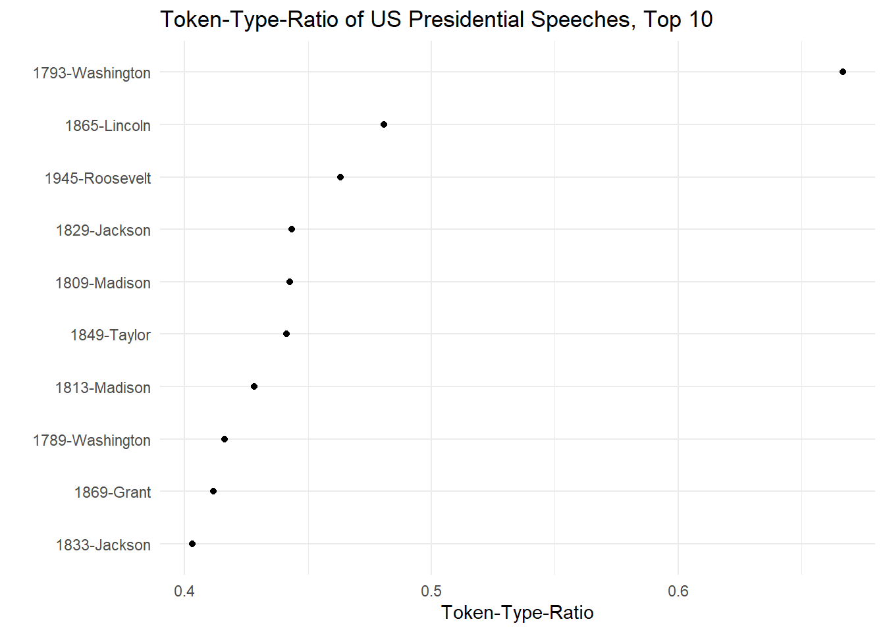
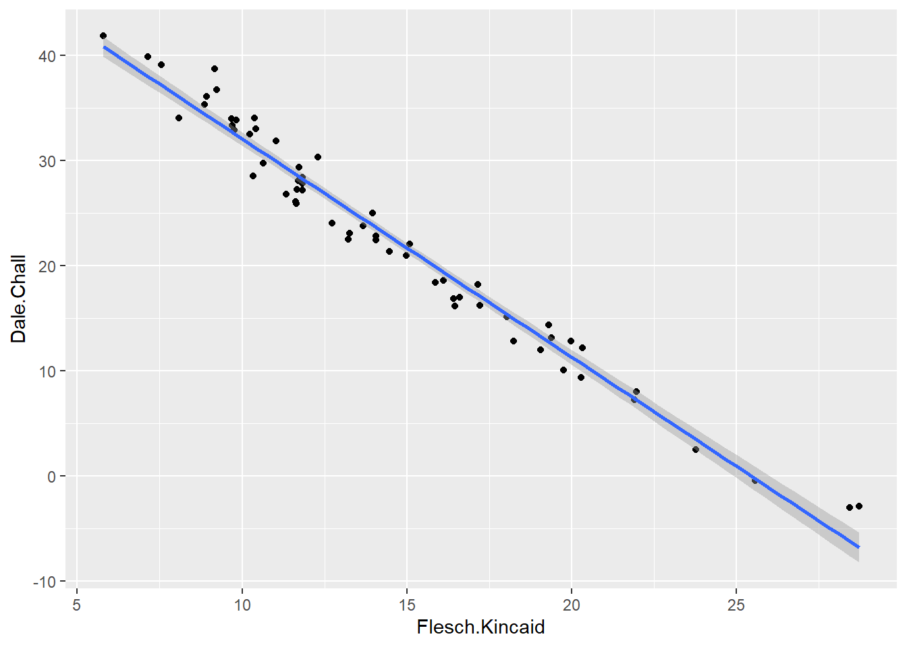

library(tidyverse)
library(quanteda)
library(quanteda.textstats)
library(quanteda.textplots)Lab Assignment Week 6
For this assignment, we will use tidyverse, quanteda, quanteda.textstats, and quanteda.textplots. You will also need quanteda.textmodels to load one of the datasets.
Frequency analysis
For this bit, we will work with the Irish budget debate speeches dataset. You can find that dataset in the quanteda.textmodels package. It is called “data_corpus_irishbudget2010” (see the Session 5 example script for more info) and you can load it the same way that we usually load the presidential speeches.
- Load the dataset, tokenize it, and create a DFM with stopwords removed. Then, create a dataframe with the 5 most common words for each party and print it.
corp <- quanteda.textmodels::data_corpus_irishbudget2010
toks <- corp |>
tokens(remove_punct = T) |>
tokens_remove(stopwords("en"))
dfmat <- dfm(toks)
top5 <- textstat_frequency(dfmat,
n = 5,
group = party)
print(top5) feature frequency rank docfreq group
1 € 113 1 2 FF
2 public 65 2 2 FF
3 tax 60 3 2 FF
4 new 55 4 2 FF
5 million 48 5 2 FF
6 people 78 1 3 FG
7 budget 71 2 3 FG
8 minister 62 3 3 FG
9 government 61 4 3 FG
10 € 55 5 3 FG
11 budget 26 1 3 Green
12 us 23 2 3 Green
13 government 19 3 3 Green
14 new 18 4 2 Green
15 must 17 5 2 Green
16 € 78 1 3 LAB
17 people 69 2 4 LAB
18 budget 66 3 4 LAB
19 minister 54 4 4 LAB
20 one 50 5 4 LAB
21 people 81 1 2 SF
22 € 77 2 2 SF
23 government 73 3 2 SF
24 budget 53 4 2 SF
25 economy 50 5 2 SF# Bonus: if you notice the € sign is not that interesting in a budget debate, you could change it like this:
top5 <- dfmat |>
dfm_remove("€") |> # this works the exact same way as tokens_remove()!
textstat_frequency(n = 5, group = party)
print(top5) feature frequency rank docfreq group
1 public 65 1 2 FF
2 tax 60 2 2 FF
3 new 55 3 2 FF
4 million 48 4 2 FF
5 government 47 5 2 FF
6 people 78 1 3 FG
7 budget 71 2 3 FG
8 minister 62 3 3 FG
9 government 61 4 3 FG
10 taoiseach 49 5 3 FG
11 budget 26 1 3 Green
12 us 23 2 3 Green
13 government 19 3 3 Green
14 new 18 4 2 Green
15 must 17 5 2 Green
16 people 69 1 4 LAB
17 budget 66 2 4 LAB
18 minister 54 3 4 LAB
19 one 50 4 4 LAB
20 tax 47 5 4 LAB
21 people 81 1 2 SF
22 government 73 2 2 SF
23 budget 53 3 2 SF
24 economy 50 4 2 SF
25 state 42 5 2 SF- Create a word cloud showing the 10 most commonly used words from each party. How useful do you find this plot?
dfmat |>
dfm_group(party) |>
textplot_wordcloud(max_words = 50,
max_size = 2.5,
min_size = .33,
comparison = T)
As you notice, this does not actually allocate 10 words to each party. It plots the 50 most common words and assigns them to the party it occurs the most in. This is an inherent drawback of the wordcloud function - and one of the two problems with this plot (the other being that you get no information for the actual frequency of those terms). The wordcloud is therefore only somewhat relevant.
Keyness analysis
- Load the US Presidential speeches dataset and tokenize it. Remove stopwords and punctuation. Run a chi-squared keyness analysis to determine the most Democrat and Republican words respectively, and plot the results. Remember that there used to be parties that were neither Democrat nor Republican (you don’t have to present keyness results for them)!
# Loading and tokenizing
corp_us <- data_corpus_inaugural
toks_us <- corp_us |>
tokens(remove_punct = T) |>
tokens_remove(stopwords("en"))
# Make the DFM - note that you need to group it!
dfm_parties <- dfm(toks_us) |>
dfm_group(Party)
# Keyness analysis per party + plot
key_dems <- textstat_keyness(dfm_parties,
target = "Democratic",
measure = "chi2")
textplot_keyness(key_dems, n = 12) # the n is not obligatory; I just chose a slightly lower number here to make the plot be easier to read. This is a tradeoff: I sacrifice some information for it.
key_reps <- textstat_keyness(dfm_parties,
target = "Republican",
measure = "chi2")
textplot_keyness(key_reps, n = 12)
Note that we have to do two separate plots here! This is because we have some other parties than Democrats and Republicans in the earlier years of the US (Federalists, Democratic-Republican, Whigs, and also a non-partisan President in George Washington). This means the reference group for both parties does not directly correspond to the other modern main party. Any time you have more than two groups in your data, you need to run individual keyness analyses for every group you are interested in.
- How many words are there that are associated with the Republican party at a 95% significance level (i.e. p <= .05)?
rep_words <- key_reps |>
filter(p <= 0.05)
nrow(rep_words)[1] 378There are 378 words that are associated with the Republican Party at a 95% significance level.
Note: This does NOT mean that these words are 95% more likely to appear in a Republican speech, nor does it mean that seeing one of those words makes it 95% likely that the speech is from a Republican. It means that there is a likelihood of 95% or higher that seeing this word is somehow positively correlated with the speaker being a Republican, but we do not know how strongly that correlation is (that would require more/different analysis).
Complexity
- Plot the type-token-ratio of the 10 Presidential speeches with the highest TTRs, using a dot plot with the speech on the y axis and the TTR on the x axis.
dfm_us_all <- tokens(corp_us, remove_punct = T) |> # I tokenize again because our old tokens object (toks_us) had stopwords removed; I want them included for TTR
dfm()
ttr_us <- textstat_lexdiv(dfm_us_all) |>
arrange(desc(TTR)) |>
head(10)
ggplot(ttr_us) +
geom_point(aes(
x = TTR,
y = fct_reorder(document, TTR)
)) +
labs(
title = "Token-Type-Ratio of US Presidential Speeches, Top 10",
x = "Token-Type-Ratio",
y = ""
) +
theme_minimal()
- Calculate the readability of every speech twice, once using the Flesch-Kincaid method and once using the Dale-Chall method. Create a scatterplot with the results of one method on the x axis and the results of the other on the y-axis, and add a trend line. What do you notice?
flesch_us <- corp_us |>
textstat_readability(measure = "Flesch.Kincaid")
dalechall_us <- corp_us |>
textstat_readability(measure = "Dale.Chall")
read_us <- left_join(flesch_us, dalechall_us)Joining with `by = join_by(document)`# Check if it worked:
head(read_us) document Flesch.Kincaid Dale.Chall
1 1789-Washington 28.43216 -3.0285325
2 1793-Washington 17.15176 18.1939815
3 1797-Adams 28.71751 -2.9004890
4 1801-Jefferson 19.29592 14.3477936
5 1805-Jefferson 21.95522 8.0248421
6 1809-Madison 25.56764 -0.4205207# Plot:
ggplot(read_us) +
geom_point(aes(
x = Flesch.Kincaid,
y = Dale.Chall
)) +
geom_smooth(aes(
x = Flesch.Kincaid,
y = Dale.Chall
),
method = "lm")`geom_smooth()` using formula = 'y ~ x'
The two measures are strongly correlated, although in a negative way: Higher Flesch-Kincaid scores correspond to an easier to read text, whereas for Dale-Chall, higher scores mean a text is harder to read. It therefore often doesn’t matter that much which test you use (as long as you are using tests for the relevant language), but you need to make sure you know how to interpret the scores!